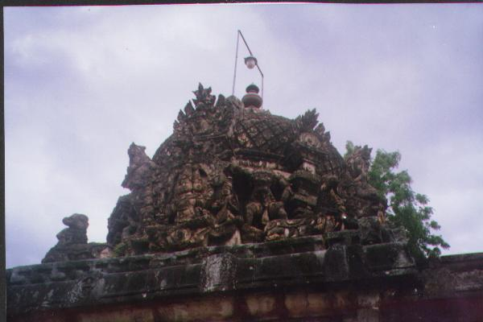
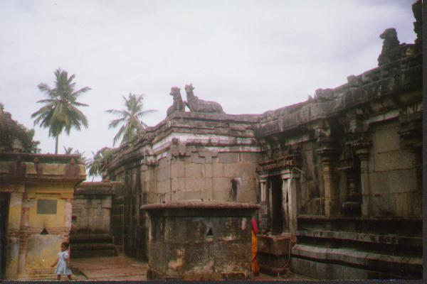
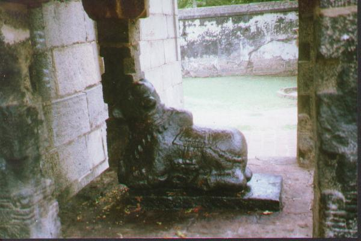

irumpi mākāḷam
- Identifier: TO32
- Modern Name (NIC):
- Modern Name (M.I.): _irumpi
- Modern Name (Govt Press): _irumpi
- Modern Name:
- Modern District & Taluk: viḻuppuram DT (tiṇṭivaṉam TK)
- Old administrative location: South Arcot DT (Tindivanam TK)
- Nearby town:
- Railway station:
- Longit. 79 deg. 47'; Latit. 12 deg. 01' [TO32]
- C.D.Maclean-3: entry: , p. , col. , lines
[ , lat. deg. ', long. deg. ']
- Location: according to PK: Toṇṭi Nāṭu (TO32)
- Name inside hymns:
- Name inside PK:
- Rank inside third volume of PIFI: 40
- Rank inside Civastala Mañcari: 40
- Rank on PY576 map: 51
- Total number of patikam-s: 1
- Campantar: 1 patikam
8 pictures taken during summer 1999 (SAS)






- Patikam 2_117